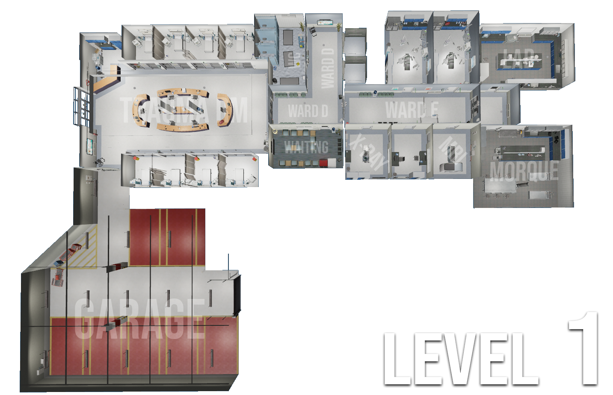
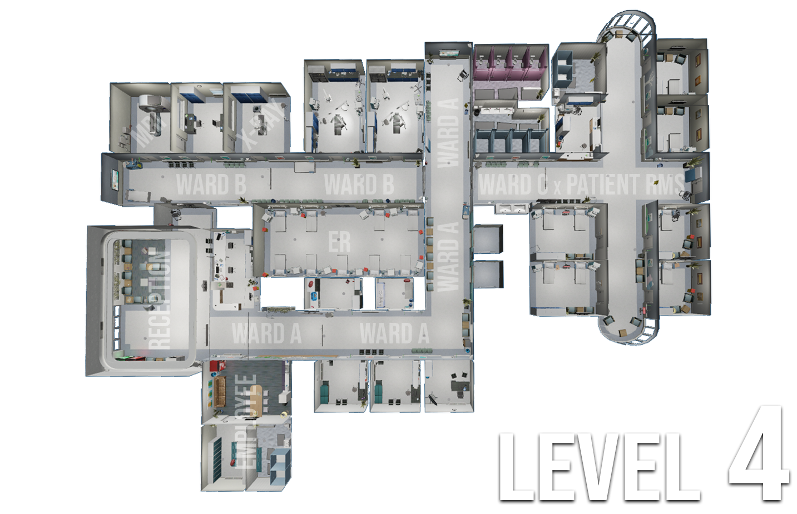

Serviciul de Ambulanță Județeană Xenon
Acasă
Conducere
Aplicații SAJ
Anunțuri
Regulament
Plan Interior
Prețuri
Planul Interior al Spitalului.
Mai jos puteți vedea o reprezentare vizuală a structurii spitalului nostru.
Aceste planuri includ principalele departamente și locațiile esențiale pentru pacienți și personalul medical.

